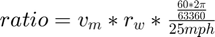
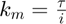
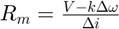

ENGS 85.07: Practical EV Engineering
Electric Go-Kart Design Case Study
Matt Gardner & Peter Mahoney
5/30/18
Contents
Motor Choice (Assessing Demands)
For our motor selection, we first calculated the gear ratio needed using this equation: 
We selected the larger motor to fulfill our requirements with a gear ratio of 1:7.14. This ratio can be acheived with a 7-tooth sprocket and a 50-tooth sprocket.
clear all; max_motor_speed = 3000; %RPM wheel_radius = 10; % 5" wheel radius and tires estimated to be 5" sidewall max_ground_speed = 25; %mph gear_ratio = max_motor_speed * wheel_radius * 2*pi * 60 * (1/(5280*12)) / max_ground_speed %#ok<NOPTS>
gear_ratio =
7.1400
Next, we calculated k & R for our chosen motor using given motor parameter graphs.
Torque constant: ; Winding resistance: 
torque_max = 4.05; % N-m torque_min = 0; current_max = 33.6; % A current_min = 1.6; RPM_max = 3700; %RPM RPM_min = 2880; k_motor = (4.05 - 0) / (33.6-1.6) %#ok v_motor = 48; % V R_motor = (v_motor - k_motor * (RPM_min-RPM_max) * (2*pi/60)) / (current_max-current_min) %#ok
k_motor =
0.1266
R_motor =
1.8396
Road Load Requirements
Road load for a constant speed of 15